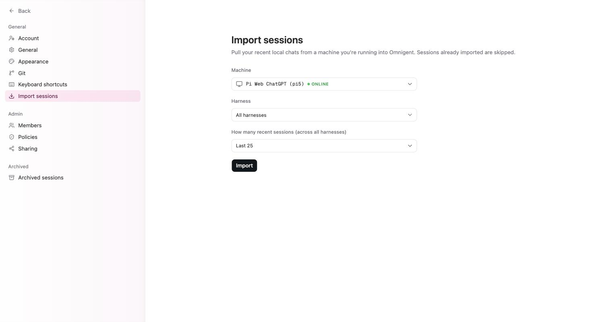

用 Project 與 Session 把工作分門別類
為何需要本章
前七章結束時你手上大概有三到五個 session。這個數量下，側邊欄捲一下就找到了，命名叫什麼都無所謂。
問題出在第三十個之後。session 不會自己消失，而每一條的標題都長得像「幫我看一下這個錯誤」。等到你想回頭確認上週那個代理改了哪個檔，翻不到就等於沒做過。
這一章講組織法：Project 怎麼分、Session 怎麼命名與釘選、什麼時候該封存，以及在幾十條裡怎麼快速找回想要的那一條。沒有一個動作是強制的，但不做的代價會在兩週後找上你。
核心觀念：四個層次，不要混在一起
專案（Project）：側邊欄裡可展開的分組，底下掛著一串 session。工作階段（Session）：一次完整的對話與執行，關掉分頁它還在跑。本書之後沿用介面上的 Project 與 Session 兩個字，因為畫面上寫的就是這兩個字。
| 層次 | 它決定什麼 | 在哪裡設定 |
|---|---|---|
| Project | 這串 session 在側邊欄歸在哪一組 | 側邊欄下半部的 Projects |
| Session | 一次對話、一次執行、一份紀錄 | Composer 送出後自動產生 |
| 工作目錄 | 代理實際會讀寫哪個資料夾 | Composer 底部第二個下拉（例如 home） |
| Worktree | 改動落在原分支還是另一個 git 工作樹 | Composer 底部第三個下拉 |
最容易踩的一句話是：換 Project 不會換工作目錄。Project 只是側邊欄上的分組；代理碰得到哪些檔案，永遠由工作目錄那個下拉決定。你可以把兩個指向完全不同資料夾的 session 放進同一組，介面不會攔你。
另一個跟 Project 綁在一起的是 worktree。設定的 Git 分頁有一項 Always use a random worktree，開啟後在任何 git 工作區起新 session 都會先開一個隨機命名的新 worktree；而個別 Project 自己的 Random worktree 設定會覆寫這個全域開關。所以同一個帳號下有些 Project 會自動開 worktree、有些不會，這是預期行為。
開始之前
- 你已經能順利開出 session。Composer 底部 Host 前面不是綠點就先回第 6 章把主機接上。
- 你想好了分組軸線。常見的是照客戶分、照機器分、照工作型態分（修 bug／寫新功能／查資料）。挑一種，混用等於沒分。
- 你知道自己主要的工作目錄叫什麼。示範站上顯示的是
home。把工作目錄相同的放一起，之後省事很多。
本書的實機記錄沒有涵蓋「建立新 Project」對話框的完整欄位。畫面上若有本章沒提到的欄位，那是版本差異，照畫面的說明填即可。
五個養成後不會再亂的習慣
-
開 session 之前先把三個下拉看一遍
Composer 底部三個 picker 是 Host、工作目錄、Worktree。送出的那一刻它們就決定了這條 session 的身份。事後你可以改標題、可以搬釘選，但代理已經在哪台機器的哪個資料夾動過手，改不回來。
-
讓標題描述結果，不要描述心情
「幫我看一下」「這個怪怪的」在當下很自然，兩週後全部長一樣。把檔名、錯誤字串或功能名稱寫進標題，例如「結帳頁 500 錯誤追查」。你之後會用 Search 找它，而 Search 只找得到你當時寫下的字。
-
把當天的主線釘到 Pinned
釘上去後可以用
⌘⌥1到⌘⌥0直接跳。這一區要保持短，超過十條就失去意義，因為快捷鍵只有十個位置。 -
用 Search 或命令面板找回舊的那一條
不要用捲的。側邊欄頂端的 Search 圖示，或鍵盤上的
⌘K命令面板，都是設計來直接跳的。找得到的前提是當初寫下了關鍵字。 -
收工時把結案的 session 封存
設定裡有獨立的
Archived sessions分頁，代表結案的 session 是被移出視線而不是被丟掉，之後還找得回來。做完的東西留在側邊欄，只會讓下一次搜尋多出雜訊。

用鍵盤在 session 之間移動
下面是設定 Keyboard shortcuts 分頁裡跟 session 導覽有關的部分。
| 動作 | 按鍵 | 什麼時候用 |
|---|---|---|
| 新 session | ⌘N | 想到就開，不要把兩件事塞進同一條 |
| 命令面板 | ⌘K | 找特定舊 session，或不記得功能藏在哪一頁 |
| 上一個／下一個 | ⌘↑／⌘↓ | 在兩條相鄰的工作之間來回比對 |
| 跳到釘選 session | ⌘⌥1 到 ⌘⌥0 | 釘選區第一到第十條，這是 Pinned 真正的價值 |
| 切換對話側邊欄 | ⌘⌥[ | 要專心讀輸出，或準備截圖時 |
| 顯示快捷鍵 | ⌘/ | 忘記時直接叫出來，不用回設定頁 |
⌘⌥] 切換的是工作區側邊欄，屬於第 7 章的面板。兩個鍵長得很像，按錯時不要以為壞了。
封存、找回，以及把舊對話搬進來
本書的實機記錄沒有涵蓋「在 session 上按哪裡封存」的入口，請在 session 本身的選單裡找；封存後的去處固定是設定的 Archived sessions 分頁。反方向的動作是匯入：在某台機器上用命令列跑過的對話可以搬進來，設定的 Import sessions 分頁寫著「Pull your recent local chats from a machine you're running into Omnigent. Sessions already imported are skipped.」，四個欄位是：
Machine：要從哪一台拉，線上的機器會帶一個ONLINE徽章Harness：預設All harnesses，可以只拉某一種框架的紀錄How many recent sessions：預設Last 25Import按鈕
「已匯入的會被跳過」這句很重要：重複按不會產生兩份，所以可以先拉 25 條看效果再決定要不要拉更多。
怎麼確認做對了
用下面四個動作驗收，每個都應該在十秒內完成。做不到的那一項就是還沒整理好。
- 展開
Projects，你能說出每一組的分類軸線，而且沒有混用不同軸線。 - 按
⌘⌥1，跳到的是今天真的在做的那條，不是上週忘記取消釘選的殘留。 - 挑一條三天前的 session，用 Search 打兩三個關鍵字就找得到，不需要捲清單。
- 按
Close sidebar之後截一張圖，畫面上沒有任何客戶名稱或專案代號。
故障排除
- 剛開的 session 在側邊欄找不到：先確認側邊欄沒被收合（
⌘⌥[切回來）。還是找不到的話，它多半掛在某個沒展開的 Project 底下，收起來的那組不會顯示清單。 - 兩條 session 標題一模一樣：命名沒寫進具體對象。打開其中一條，看 Composer 底部的工作目錄與 Host，用那個資訊重新命名。
⌘⌥1跳到的不是預期的那條：釘選區的順序決定編號，不是你釘上去的時間順序；超過十條之後就沒有對應的快捷鍵。定期把結案的取消釘選。- 同一個 Project 底下有些 session 自動開了新 worktree、有些沒有：這是設定衝突不是故障。全域的 Always use a random worktree 會被個別 Project 的 Random worktree 設定覆寫，要一致就把兩邊調成同一個值。
- 本機跑過的舊對話沒出現在 Omnigent 裡：它們不會自動同步，要走
Import sessions手動拉。來源機器必須顯示ONLINE，而且預設只拉最近 25 條。
固定來源
側邊欄結構、快捷鍵表、Git 與 Import sessions 兩個設定分頁的文案，來自 2026-09-09 對正式站的實機記錄，整理在本倉庫的 docs/research/ui-facts-2026-09-09.md。本章標示為「實機記錄未涵蓋」的段落，請以你畫面上的實際說明為準。
常見問題
Project 跟磁碟上的資料夾是同一件事嗎？
不是。Project 是側邊欄上的分組，只影響 session 清單怎麼排。代理實際讀寫哪個資料夾，由 Composer 底部第二個下拉決定。你可以把指向兩個不同資料夾的 session 放進同一個 Project，介面不會阻止，但那樣分組就失去意義了。
已經開好的 Session 可以搬到別的 Project 嗎？
本書的實機記錄沒有涵蓋搬移入口，所以這裡不給步驟。替代作法有兩個：把重要的那條釘到 Pinned，位置就固定了；或重新命名，把 Project 的名字寫進標題讓 Search 找得到。如果你的版本上有搬移選項，照畫面操作即可，不會影響已跑完的紀錄。
我需要為每個 Project 都開 worktree 嗎？
不需要，看你怕不怕代理直接改動當前分支。Git 分頁開啟 Always use a random worktree，改動就會落在隨機命名的新 worktree 上，原分支不動；個別 Project 可以覆寫這個開關。只讀性質的查詢不需要，會動到程式碼的工作建議開。
封存跟刪除是一樣的嗎？
不一樣。設定裡有獨立的 Archived sessions 分頁，封存過的 session 落在那裡，是移出視線而不是消失。這也是為什麼結案時建議封存：成本紀錄與執行過程都還在，之後要對帳或回溯都找得到。
我在自己筆電上跑過的對話，能不能拉進來一起管理？
可以，走設定的 Import sessions。選來源機器（要顯示 ONLINE）、選框架、選最近幾條（預設 Last 25），按 Import。介面明講已經匯入過的會被跳過，所以重複按不會產生重複資料。